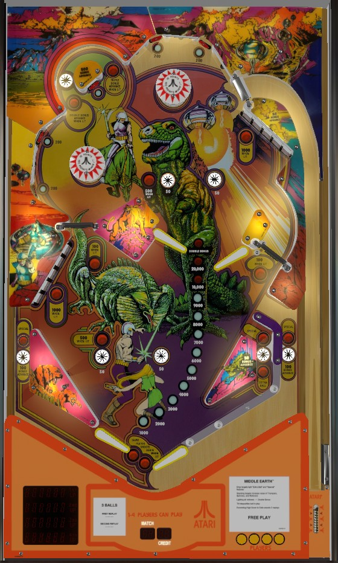

Middle Earth does not show any information pertinent to the game state on its backglass. To see player scores, which player is up, the current ball number, the match number, or the credit counter, consult the apron, which has myriad 7-digit displays inlaid to show all four player scores and other necessary info.
Middle Earth comes with a "multiplied scoring mode", which multiplies all scoring by 5 relative to the values shown on the playfield. In this guide, we assume this setting is off, and all scoring is described as indicated. When this setting is on, the match number can still pick a value other than 00 or 50, even though those two are the only possible values for a player's score to end on.
Notice, before anything else, that the flippers in each pair on Middle Earth are not level. On many copies of the game, the left flipper is higher than the right flipper in each pair, but on some early production copies, the upper left flipper is lower than the upper right flipper. Pay close attention to the ball's path at all times and know that flipper skills may not work like you're used to.
Much of Middle Earth's messy, disjointed playfield can be ignored in favor of shooting only the drop targets, which score 500 points and a bonus advance each to start, and increases to 1,000 and a bonus advance each after a bank is completed once. Completing drop target banks also lights the right in lane for extra ball or Special and can light the out lanes for Special as well. Double bonus is activated by pressing all 5 star rollovers in one ball: two near each set of flippers, and one in the top left u-turn. Bonus is very frequently more valuable than playfield scoring on any given ball.
The below picture of Middle Earth's playfield was taken from the VPX recreation by Balater.

There is no skill shot on Middle Earth. A plunged ball enters the playfield in the top right. The exact power of this plunged ball determines whether it flies directly toward the left pop bumper, falls to one of the upper flippers, or somewhere in between.
There are two 5-banks: one in the lower left, and one in the upper right. Each target down in either bank scores 500 points and a bonus advance. Completing a bank causes that bank to reset and increases the value of that bank's drop targets to 1,000 each for the rest of the ball. Completing either bank once lights the right in lane for extra ball. Completing both banks once each lights the right in lane for Special. Completing the lower left bank twice lights the left out lane for Special. Completing the upper right bank twice lights the right out lane for Special.
In competition/novelty play, Special can be set to score 10,000 or 20,000 points, and extra ball can be set to score 10,000 points.
There are 5 standup targets in the upper playfield: two near the left pop bumper, two near the top pop bumper, and one between the entrances of the top left u-turn. The left and top standup targets score 200 points; hitting both of the targets near a bumper will light that bumper for 100 points instead of 10 for the rest of the ball. The standup target near the u-turn scores 500 points and a bonus advance, and hitting it lights both of the spinners that connect the upper and lower playfields for 100 points per spin instead of 10 for the rest of the ball. Hitting all 5 standup targets in one ball lights the star rollovers scattered around the playfield for 500 points instead of 50.
There are 5 star rollovers scattered around the playfield: one just above each of the game's 4 flippers, and one in the upper left u-turn. To start, these star rollovers are unlit and score 50 points. Pressing a star rollover lights it, but does not change its value. Hitting all 5 standup targets in the upper playfield increases the star rollover value from 50 points to 500. Lighting all 5 of the aforementioned star rollovers in one ball awards Double Bonus, the game's only bonus multiplier.
In addition to having one of the game's 5 star rollovers, the upper left u-turn scores 1 bonus advance the first time it is made on a ball, 2 bonus advances the second time, and 3 bonus advances every subsequent time.
There is no left in lane. The lower left flipper backs up directly to a very large slingshot. The left out lane scores 500 points and a bonus advance, and is lit for Special by completing the lower left drop targets twice. The lower left flipper is positioned higher than the lower right flipper. On the right, there is one in lane and one out lane, but the lanes have curved entrances that face the top left corner of the playfield rather than being purely vertical. The right in lane scores 50 points and a bonus advance, and is lit for extra ball by completing one drop target bank, or Special for completing both drop target banks once. The right out lane scores 500 points and a bonus advance, and is lit for Special by completing the upper right drop target bank twice in a single ball.
Bonus is advanced by any drop target, any in/out lane, the standup target near the upper left u-turn, or the upper left u-turn itself. Double bonus can be earned on any ball by lighting the 5 star rollovers around the table (not including the ones in the in/out lanes). Double bonus is not given for free on any ball; however, an operator setting exists that, when turned on, causes all bonus advances to be doubled on the final ball of the game only. Max bonus is 2x 29,000 = 58,000 points. No part of the bonus can be collected mid-ball or carried from one ball to the next.